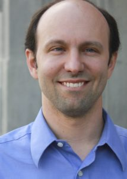
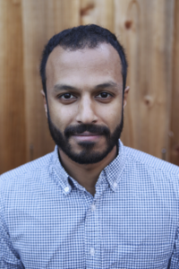
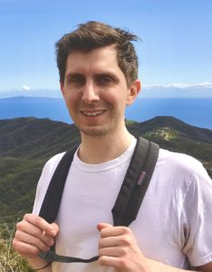
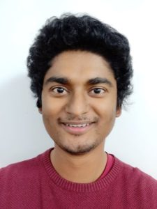
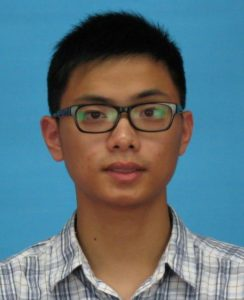
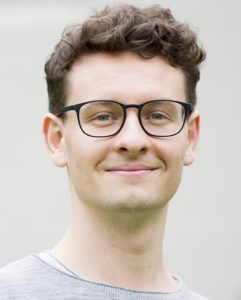
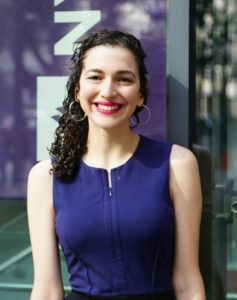

Faculty
|  | Daniel B. Neill, Director of the ML4G Lab, is Associate Professor of Computer Science and Public Service at NYU’s Courant Institute Department of Computer Science and Robert F. Wagner Graduate School of Public Service. He is also Associate Professor of Urban Analytics at NYU’s Center for Urban Science and Progress and co-director of the NYU Urban Initiative. His research focuses on developing new methods for machine learning and event detection in massive and complex datasets, with applications ranging from medicine and public health to law enforcement and urban analytics. He works to create, deploy, and evaluate data-driven tools and systems that can improve the quality of public health, safety, and security. He received his MPhil from Cambridge University and his MS and PhD in Computer Science from Carnegie Mellon University. (webpage) |
| Sam Adhikari is Assistant Professor of Biostatistics in the Department of Population Health, NYU Langone School of Medicine. She joined NYU after a PhD in statistics at Carnegie Mellon University and postdoctoral research at Harvard Medical School. Her research interests lie in developing and implementing statistical and machine learning tools to solve problems motivated by real-world applications in medicine, global health and education. Her methodological work has focused on statistical social network analysis, penalized regression for longitudinal data, and Bayesian causal inference. She is also passionate about developing ML infrastructures in low- and middle-income countries and has been involved in initiatives to teach AI in Nepal through Nepal Applied Mathematics and Informatics Institute. (webpage) | |
| Magdalena Cerdá is an Associate Professor and Director of the Center for Opioid Epidemiology and Policy in the Department of Population Health, NYU Langone School of Medicine. Her research focuses on the effects that state and national drug and health policies have on substance abuse trends, and on the ways in which the urban context shapes violence. Her currently funded research projects focus on the impact of cannabis laws and opioid policies on substance abuse, mental illness, and associated health problems in the United States and South America. This work includes application of Bayesian hierarchical spatio-temporal models, agent-based modeling, and machine learning approaches. (webpage) | |
|  |
Ravi Shroff is Assistant Professor of Applied Statistics and Urban Informatics at NYU’s Steinhardt School and Center for Urban Science and Progress (CUSP). His research involves the development and application of statistical and computational methods to issues in criminal justice and child welfare. Ravi studied mathematics at UC San Diego (MS and PhD), applied urban science and informatics at CUSP (MS), and mathematics and economics at the University of Washington (BS). (webpage) |
Postdoctoral Researchers
| Martina Balestra is a postdoctoral researcher at NYU’s Center for Urban Science and Progress, and part of CUSP’s inaugural class of Smart Cities postdocs. She completed her PhD (in Human-Computer Interaction) from NYU in 2019, MS from Cornell University in 2014, and BS from the Olin College of Engineering in 2010. From 2010 to 2012 she worked at the MITRE Corporation as a Systems Engineer. She is generally interested in computational social science, collective behavior, dynamical systems, human-computer interaction, and machine learning. Her current focus is on fair resource allocation and modeling biased decision-making processes. |
Students
|  | Bennett Allen is a PhD student in epidemiology at NYU School of Medicine, where he studies the opioid overdose epidemic. His current work is on supply-side policy, opioid prescribing practices and treatment access, and novel overdose prevention strategies. Before joining NYU School of Medicine, he worked for nearly a decade in drug research and policy in New York City government, most recently on supervised injection and cannabis legalization. He holds an MPA in public policy and a BA in comparative literature from NYU. |
| Kate Boxer is a first-year computer science PhD student at NYU’s Courant Institute. She has previously held positions at the University of Chicago’s Center for Data Science and Public Policy, MDRC, and NYU’s Open Networks and Big Data Lab. Her previous work includes developing tools for targeted preventive services for at-risk populations, evaluating education policy, and detecting bias in pretrial risk assessment tools. Some of her broad research interests include fair resource allocation, bias detection and correction, and evaluation of impacts in observational data. | |
|  | Ougni Chakraborty is an MS student in Electrical Engineering and a junior research scientist at NYU’s Wagner School of Public Service, where he applies econometric techniques to study healthcare policies and their implications at both the local and national level. His research interests include causal machine learning, computational cognitive modeling, and application of machine learning to public policy. He holds bachelor’s degrees in physics and mathematics from the City College of New York. |
|  | Shizhan Gong is an MS student at NYU’s Center for Data Science. Before that, he received his BSE from Tsinghua University. He is interested in applying machine learning methods for healthcare and in building fairer and more interpretable algorithms. |
| Haorui Guo is an undergraduate student studying computer science and mathematics. He is broadly interested in pattern detection applied to public health. Recently he has been working on disease surveillance and natural language processing. | |
| Ben Jakubowski is a first-year computer science PhD student at NYU’s Courant Institute of Mathematical Sciences. He is broadly interested in using machine learning to tackle public sector challenges, and in developing novel methods that improve on our current ability to leverage rich public sector data into welfare gains. Before beginning his PhD at NYU, Ben was a data scientist at Crime Lab New York, where he built and deployed predictive models to support public sector and non-profit decision making in New York and Chicago. He also previously obtained his MS in Data Science from NYU, and spent three years as an 8th grade science teacher in District of Columbia Public Schools. | |
|  | Konstantin Klemmer is a PhD student in Computer Science at the University of Warwick and a visiting student at NYU’s Center for Urban Science and Progress. His work focuses on spatial modeling in machine learning and its application to urban problems such as optimizing shared mobility systems or mapping informal settlements from satellite imagery. He holds a Bachelors degree in Economics from the Univesity of Freiburg (Germany) and a Masters in Transportation from Imperial College and University College London. (webpage) |
|  | Katie Rosman is a first-year master’s student in computer science at NYU’s Tandon School of Engineering. She is interested in applying computational and statistical methods to reduce structural inequities and increase the efficacy of public institutions. She previously worked as a data scientist at the New York State Attorney General’s office, where her technical analysis was featured in numerous civil rights, healthcare, and consumer fraud cases, including the state’s lawsuit against opioid manufacturers and distributors for their contributions to the opioid epidemic. Previously, Katie worked for the City of New York as well as several nonprofits focused on growing the opportunities available to underserved populations. She earned her Bachelor’s Degree in Public Policy and African-American Studies, with a joint concentration on poverty and inequality, from Stanford University. |